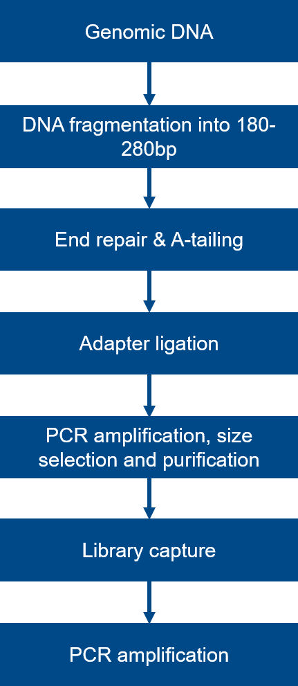
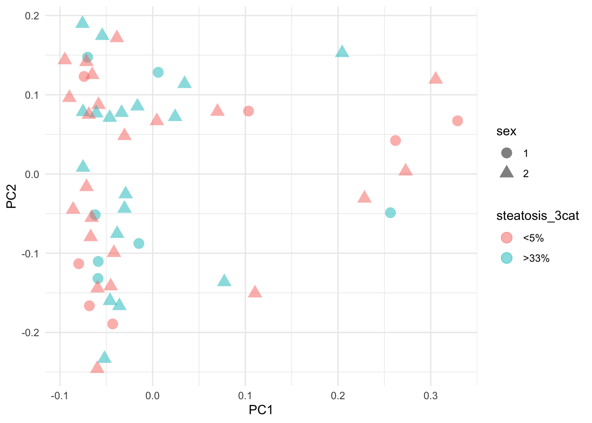
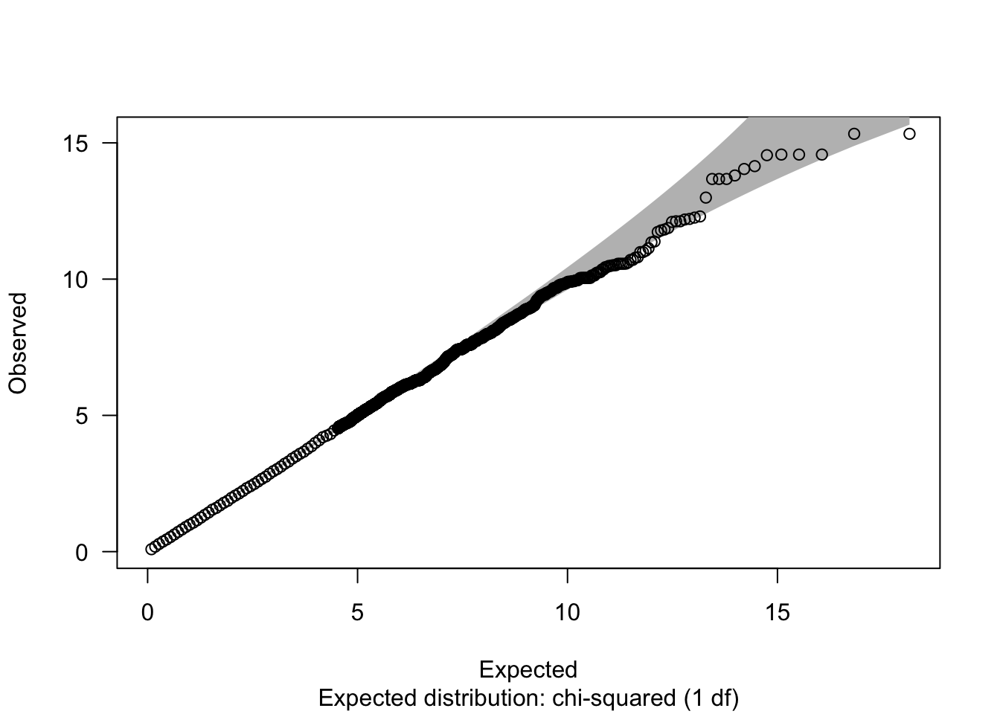
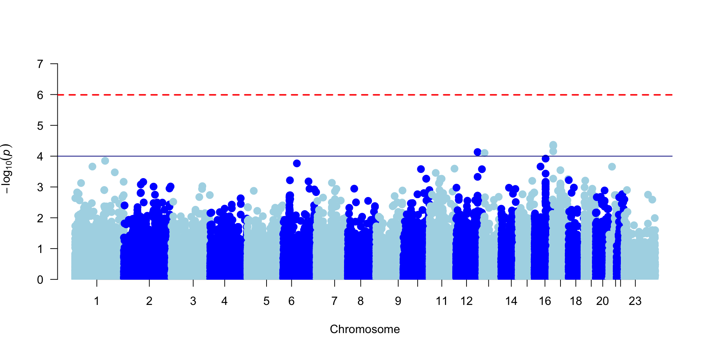

Adipose tissue dysfunction and liver steatosis are interconnected metabolic disorders with significant global health implications, both of which are highly heritable (Anstee et al., 2013). Understanding their genetic basis is essential for unraveling their etiology and progression.
Exome sequencing, which targets the coding regions of the genome, offers a powerful and cost-effective approach to identify the genetic variants underlying these conditions and to discover potential biomarkers for early detection and therapeutic intervention. Exome sequencing is particularly advantageous because it focuses on exonic regions, where most disease-related variants are found, enabling a comprehensive analysis of the genetic diversity that drives complex traits like adipose tissue dysfunction and liver steatosis. This precision is key to understanding the biological mechanisms involved and translating genetic findings into clinical practice.
Genetic association studies, such as Genome-Wide Association Studies (GWAS) and Exome-Wide Association Studies (EWAS), play a critical role in this research. While GWAS explores common genetic variants across the entire genome, EWAS zeroes in on variants within the exome, making it especially useful for identifying causal mutations in coding regions (Battram et al., 2022). Key genes implicated in adipose tissue dysfunction and liver steatosis include PNPLA3, TM6SF2, and GCKR, which are involved in metabolic processes and fat distribution within cells, playing critical roles in the pathophysiology of these conditions (Anstee et al., 2013). However, since no single SNP can adequately predict complex diseases, polygenic risk scores (PRSs), which aggregate the risk from multiple variants, offer a more effective predictive tool (Chatterjee et al., 2016). PRSs are being developed in the field of fatty liver disease (FLD), where both common and rare variants have been strongly linked to the risk of progressive NAFLD, independent of clinical factors like liver fibrosis severity (Dongiovanni et al., 2017). However, their clinical utility remains to be fully established. Our study aimed to perform an EWAS to identify genes associated with liver fat accumulation in a cohort of obese patients. By focusing on the exonic regions of the genome, we sought to uncover genetic variants that contribute to the pathophysiology of liver steatosis in obesity, with the goal of identifying potential biomarkers for early detection and tailored therapeutic interventions.
3.2 Experimental design
3.2.1 DNA isolation and extraction
Serum samples from patients were stored in the Biobank of the Aragon Health System. Genomic DNA was isolated from buffy coat samples using the FlexiGene DNA AGF3000 kit (Qiagen,) according to the manufacturer’s protocol. The isolation process was automated on the AutoGenFlex 3000 workstation (Autogen)
3.2.2 Library Preparation and Sequencing

Figure 3.1: Library Preparation Workflow
The genomic DNA was randomly sheared into short fragments with the size of 180-280 bp. The obtained fragments were end repaired, A-tailed, and further ligated with Illumina adapters. The fragments with adapters were PCR amplified, size selected, and purified. Hybridization capture of libraries was proceeded according to the following procedures. Briefly, the prepped libraries were hybridized in the buffer with biotin-labeled probes, and magnetic beads with streptavidin were used to capture the exons of genes. Subsequently, non-hybridized fragments were washed out and probes were digested. The captured libraries were enriched by PCR amplification (Figure 3.1).
The library was checked with Qubit and real-time PCR for quantification and bioanalyzer for size distribution detection. Quantified libraries were pooled and sequenced on Illumina platforms, according to effective library concentration and data amount required.
3.2.3 Variant Calling workflow
The computational analysis was managed using Nextflow (v23.10.1), a scalable and reproducible workflow management system that allows for seamless execution of complex bioinformatics pipelines. The workflow was built on the nf-core framework, which provides community-curated pipelines, ensuring consistency and reproducibility across analyses (Ewels et al., 2020). The nf-core/sarek pipeline (version 3.4.1) (Garcia et al., 2020) was utilized specifically for variant calling. This pipeline is optimized for whole-genome sequencing (WGS) and targeted sequencing data, commonly used in cancer genomics studies.
The pipeline was executed by the Biocomputation Core on the Core Cluster of the Instituto Aragonés de Ciencias de la Salud and configured to run in a Docker containerized environment. This setup enhances reproducibility and facilitates the seamless execution of the analysis across different computing platforms.
Input data, comprising clean fastq.gz files, were organized in a CSV file (samplesheet.csv) that included essential metadata such as sample identifiers and sequencing data paths. The sequencing data were aligned to the human reference genome GATK GRCh38, providing a standardized basis for variant calling. Freebayes, a variant caller known for its efficacy in detecting small variants like SNPs and indels (Garrison et al., 2012), was employed to call variants. The resulting variants were stored in Variant Call Format (VCF) files, which contain detailed metadata and structured information about each detected variant.
By adhering to the Genome Analysis Toolkit (GATK) best practices, including recommendations for quality score recalibration and variant filtering, this workflow ensures that the variant calling process is both accurate and reliable. The stringent quality controls integrated into the GATK framework further enhance the robustness of the results.
3.2.4 Quality control (QC) and reads preprocessing
All QC results from the differents steps in the nf-core/sarek pipeline were summarized in the (Multiqc report)
3.2.5 VCF processing anf PLINK transformation
The next computational steps were carried out with the programs bcftools(Li, 2011) and PLINK(Purcell et al., 2007) in the command line using . Normalization, performed using bcftools norm, corrects for base misalignments and merges multi-nucleotide polymorphisms (MNPs) into single entries, ensuring that variants are represented consistently across datasets. This process was executed on individual VCF files, which were then indexed for efficient access. Following normalization, the bcftools merge command was employed to merge all normalized VCF files into a single file. This merging step is crucial for subsequent analyses as it compiles all variant data into a unified dataset, facilitating easier manipulation and analysis. Subsequently, duplicate variants were removed using bcftools norm with the --rm-dup option, targeting both single nucleotide polymorphisms (SNPs) and insertions-deletions (indels). This removal is essential to prevent redundancy in variant representation, which can skew allele frequency calculations and other statistical analyses.
The final preprocessing step involved transforming the VCF file for compatibility with the PLINK toolset, a widely used software package for genome association studies. The plink command was utilized to convert VCF data into binary ped files while applying several filters: only SNPs with a minor allele frequency (MAF) of at least 0.05 were retained, and variants with more than 30% missing genotyping information were excluded. Additionally, a stringent Hardy-Weinberg equilibrium threshold was set to minimize the inclusion of potentially erroneous genotypes. This transformation prepares the dataset for robust statistical analyses, allowing for the exploration of genetic associations and population structure with high reliability.
Code
############################################ 1) Script to normalize and merge vcfs##########################################!/bin/bash# Set the directory to search for VCF filesVCF_DIR=$1# Check if directory is providedif[-z"$VCF_DIR"];thenecho"Usage: $0 /path/to/vcf_directory"exit 1fi# Create a temporary directory for normalized filesTEMP_DIR=$(mktemp-d)echo"Temporary directory for normalized VCFs: $TEMP_DIR"# Find all .vcf.gz files recursively in the directoryVCF_FILES=$(find"$VCF_DIR"-name"*.vcf.gz")# Normalize each VCF file and index itfor INPUT_VCF in$VCF_FILES;doOUTPUT_VCF="$TEMP_DIR/$(basename"$INPUT_VCF" .vcf.gz).norm.vcf.gz"echo"Normalizing $INPUT_VCF to $OUTPUT_VCF"# Normalize using bcftoolsbcftools norm -m-both-o"$OUTPUT_VCF"-O z "$INPUT_VCF"--threads 8# Check if normalization was successfulif[-s"$OUTPUT_VCF"];then# Index the normalized VCF if it's not emptytabix-p vcf "$OUTPUT_VCF"elseecho"Warning: Normalized VCF $OUTPUT_VCF is empty."fidone# List all normalized VCF filesNORMALIZED_VCFS=$(find"$TEMP_DIR"-name"*.norm.vcf.gz")# Check if any normalized VCF files existif[-z"$NORMALIZED_VCFS"];thenecho"Error: No normalized VCF files found. Exiting."rm-rf"$TEMP_DIR"exit 1fi# Merge all normalized VCF files into one using bcftools mergeecho"Merging normalized VCF files into merged_output.vcf"bcftools merge $NORMALIZED_VCFS-o merged_output.vcf -O v --threads 8# Check if the merge resulted in a non-empty fileif[-s merged_output.vcf ];thenecho"Merged VCF saved as merged_output.vcf"elseecho"Error: Merged VCF is empty. Something went wrong."fi# Clean up temporary directoryrm-rf"$TEMP_DIR"##################################################### 2) Remove duplicate variants (snps & indels)#################################################bcftools norm --rm-dup both merged_output.vcf -o merged_output_nodup.vcf##################################################### 3) Transform into PLINK#################################################./plink--vcf merged_output_nodup.vcf \--make-bed \--maf 0.05 \--geno 0.3 \--hwe 0.0000001 \--snps-only \--double-id \--set-missing-var-ids @:# \--out only_snps_cleaned # only include SNPs with MAF >= 0.05# include only SNPs with a 70% genotyping rate (30% missing) use# causes both family and within-family IDs to be set to the sample ID to avoid the error because the presence of "_" in the sample ID
The conversion from VCF to PLINK format produced three key files: .bed, which contains genotype data; .bim, which lists all variants and their genomic positions; and .fam, which provides participant identifiers and traits. The .bim file contained 10,832,436 variants, of which 9,248,936 were successfully loaded, demonstrating a comprehensive coverage of the genetic data. During this process, missing variant identifiers were appropriately assigned.
Despite this substantial data inclusion, the overall genotyping rate was notably low at 3.57% after removing 9,184,238 variants due to extensive missing genotype data. Furthermore, deviations observed in Hardy-Weinberg equilibrium resulted in the elimination of 4,504 variants through an exact test for Hardy-Weinberg equilibrium. An additional 11,342 variants were excluded based on minor allele frequency thresholds.
After enforcing all quality control measures and variant filters, only 48,852 variants across 80 individuals remained, meeting the criteria for inclusion in further analyses.The significantly low genotyping rate observed could be attributed to the high number of SNPs unique to individual VCF files and not replicated across the cohort. This uniqueness might stem from intrinsic biological diversity or variations in sample processing techniques.
3.3 Descriptive analysis of phenotype and covariates
Code
# phenotype datapheno <-read_csv("data/20240813_metadata.csv") |>distinct(sample, .keep_all = T) |>mutate(sample =paste0("DNA_",sample)) |>column_to_rownames("sample") |># recode steatosis categories into a new variable with only 3 levelsmutate(steatosis_3cat=fct_recode(Steatosis,`>33%`=">33-66%",`>33%`=">66%"),steatosis_3cat=factor(steatosis_3cat,levels=c("<5%", "5-33%", ">33%"))) |># recode sex as the .fam file mutate(sex =fct_recode(sexo, "1"="hombre", "2"="mujer"))# load genotype data that are in PLINK format (bed,bim, and fam files).# List containing the genotypes, the family structure and the SNP annotation.plink <-read.plink("data/only_snps_cleaned.bed") # store genotype, annotation, and family data in different files for downstream analysesgeno0 <- plink$genotypesannotation <- plink$mapfamily0 <- plink$fam # rownames and patient IDs from the demographics data are different from the plink object.# change rownames to IDsrownames(family0) <-str_sub(rownames(family0),1,7)rownames(geno0) <-str_sub(rownames(geno0),1,7)# new genotype, annotation, and family files containing the same individuals in the same orderids <-intersect(rownames(pheno),rownames(geno0))geno <- geno0[ids,]pheno <- pheno[ids, ]family <- family0[ids,] |>mutate(sex = pheno$sex)
A total of 80 individuals with genotype and phenotype data available were segmented into three groups based on liver fat content (<5%, 5-33%, >33%). There were no statistically significant differences across any of the variables assessed, including age, gender, body mass index (BMI), and liver fibrosis stages (Table 3.1). Median age distributions across the groups were 47, 51, and 51 years, respectively, with a p-value of 0.505, indicating uniform age distribution across the groups. Gender ratios were similarly consistent, comprising approximately 75% females and 25% males in each group, with a p-value of 0.913. BMI values, with medians of 49.2, 43.9, and 45.9 for the respective groups, also showed no significant variation (p=0.563). Even the categorization of liver fibrosis stages from F0 to F4 did not demonstrate significant differences across the groups (p=0.172), underscoring a lack of correlation between the variables studied and the percentage of liver fat. This uniformity highlights the absence of significant demographic or clinical variations among the different levels of liver steatosis within the cohort.
Code
# tables with the descriptive analysis of phenotypecdesc <-compareGroups (steatosis_3cat ~ edad + sexo + imc + Fibrosis.cat ,pheno, method=2)tdesc <-createTable(cdesc, show.p.mul = T, show.all = T)export2md(tdesc, caption ="") |>kable_styling(font_size =11) |>remove_column(c(7,9))
Table 3.1: Main phenotypic characterists in the genotyped cohort according to liver fat percentage.
[ALL]
<5%
5-33%
>33%
p.overall
p.<5% vs >33%
N=80
N=29
N=26
N=25
edad
49.0 [41.0;55.0]
47.0 [41.0;52.0]
51.0 [42.5;56.8]
51.0 [41.0;54.0]
0.505
0.497
sexo:
0.913
1.000
hombre
20 (25.0%)
7 (24.1%)
6 (23.1%)
7 (28.0%)
mujer
60 (75.0%)
22 (75.9%)
20 (76.9%)
18 (72.0%)
imc
45.9 [41.6;50.5]
49.2 [41.5;51.3]
43.9 [41.6;50.4]
45.9 [42.7;46.9]
0.563
0.695
Fibrosis.cat:
0.172
0.161
F0
59 (74.7%)
25 (89.3%)
19 (73.1%)
15 (60.0%)
F1
13 (16.5%)
2 (7.14%)
4 (15.4%)
7 (28.0%)
F2
6 (7.59%)
1 (3.57%)
3 (11.5%)
2 (8.00%)
F2-F4
1 (1.27%)
0 (0.00%)
0 (0.00%)
1 (4.00%)
Data represent median[IQR] or number of cases (%).
p.overall: Kruskal-Wallis´ associated p-value.
p.5-33% vs >33%: p- value for the comparison between <5% vs >33% steatosis (Mann-Whithney)
In genome/exome-wide association studies of qualitative traits, the analysis is typically conducted between two groups to maximize the detection of genetic variants associated with the trait of interest. In this study, the cohort was divided into three groups based on liver fat content (<5%, 5-33%, >33%), but for the GWAS, only the two extreme groups—29 obese individuals with no steatosis (<5%) and 25 individuals with severe steatosis (>33%)—were compared. This approach enhances the contrast between cases and controls, reduces noise and heterogeneity, and increases the likelihood of identifying significant genetic associations by focusing on individuals with the most distinct phenotypic differences.
3.4 Population structure
First, we aimed to investigate population structure and ancestry, utilizing Principal Component Analysis (PCA) to explore genetic variation. We first transformed genetic data from PLINK to GDS format for efficiency and applied linkage disequilibrium (LD) pruning to focus on significant SNPs, essential for PCA’s computational efficiency. The pruned SNPs were analyzed using PCA to visualize the population structure, revealing no distinct clustering by sex but some dispersion related to liver steatosis levels (Figure 3.2).
The PCA results indicated subtle genetic variability associated with liver steatosis, suggesting its potential to influence outcomes in genome-wide association studies (GWAS). Given this variability, we recommend incorporating principal components as covariates in GWAS to adjust for underlying population structure, thereby enhancing the robustness of GWAS findings. This approach ensures that associations detected are due to genuine genetic influences rather than confounding factors, demonstrating the strategic integration of data transformation, pruning, and analysis in genetic studies.
Code
# Transform PLINK data into GDS format for more efficient data manipulationsnpgdsBED2GDS("data/only_snps_cleaned.bed", "data/only_snps_cleaned.fam","data/only_snps_cleaned.bim", out.gdsfn ="GDS")# Open the GDS file for further analysisgenofile <-snpgdsOpen("GDS")# Set a random seed for reproducibility in stochastic processesset.seed(12345)# Retrieve column names from genofile, which include SNP identifierssnps.qc <-colnames(geno)# Perform linkage disequilibrium (LD) pruning to reduce SNP redundancysnp.prune <-snpgdsLDpruning(genofile, ld.threshold =0.2,snp.id = snps.qc)# Extract SNP IDs after LD pruning for use in population ancestry analysissnps.ibd <-unlist(snp.prune, use.names=FALSE)# Calculate identity by descent (IBD) matrix using pruned SNPsibd <-snpgdsIBDMoM(genofile, kinship=TRUE,snp.id = snps.ibd,num.thread =6)
Code
# Perform PCA on the genomic data to investigate population structurepca <-snpgdsPCA(genofile, sample.id=family$member,snp.id = snps.ibd, num.thread=8,verbose = F)# Close the GDS file after analysis to free resourcesclosefn.gds(genofile)# Bind the PCA components t othe phenotype datapca.comp <-cbind(ID=pca$sample.id,pca$eigenvect[, 1:2]) |>as.data.frame() |>set_names(c("ID", "PC1","PC2"))rownames(pca.comp) <-substr(pca.comp$ID,1,7)pca.comp$ID <-NULLpheno.qc.pca <- pca.comp[match(rownames(pheno),rownames(pca.comp)),] |>bind_cols(pheno) |>filter(steatosis_3cat !="5-33%") |>mutate(sexo =as.factor (sexo)) |>mutate(steatosis_3cat =droplevels(steatosis_3cat )) |>mutate(across(c(PC1,PC2), \(x) as.numeric(x)))geno.qc <- geno[rownames(pheno.qc.pca ),]# Plot the first two principal components to visualize population structureggplot (pheno.qc.pca,aes(x=PC1, y=PC2, colour = steatosis_3cat, shape = sex))+geom_point(size=4, alpha=0.5)+theme_minimal()

Figure 3.2: Population structure obtained by plotting the first two axes of the genetic variation (PC1 and PC2) from PCA of the SNP matrix. Each point corresponds to an individual, coloured according to sex and steatosis category
3.5 Exome-wide association analysis
In our study, we assessed the risk of potential inflation in genetic associations due to undetected latent variables using a quantile-quantile (Q-Q) plot. This plot is crucial for evaluating whether the observed chi-squared (χ2) statistics from our genetic associations deviate from the expected distribution under the null hypothesis of no association. A Q-Q plot helps identify potential inflation caused by population stratification, cryptic relatedness, or other confounding factors. In our results, as shown in Figure 3.3, the Q-Q plot demonstrated that the observed χ2 values closely aligned with the expected values, indicated by a lambda (λ) close to 1. This suggests that our estimates are not significantly inflated, providing confidence in the validity of our genetic association findings.
Code
# Perform single SNP tests for the 'steatosis_3cat' trait using phenotype and genotype datares <-single.snp.tests(steatosis_3cat, data=pheno.qc.pca, snp.data=geno.qc)# Calculate chi-squared statistics from the test resultschi2 <-chi.squared(res, df=1)# Generate a Q-Q plot of the chi-squared statistics to assess inflationqq.chisq(chi2, main ="")
N omitted lambda
48852.000000 0.000000 1.002291

Figure 3.3: QQ plot of observed vs expected p values
In our genetic association study, we utilized the snp.rhs.tests function from the snpStats package to investigate the relationship between the trait steatosis and SNPs, factoring in potential confounders such as sex and principal components PC1 and PC2. This function is specifically designed to fit a generalized linear model (GLM) where the phenotype is treated as the dependent variable. Importantly, this model allows for the inclusion of one or more covariates— in this case, reported sex and the principal components — which serve as independent variables. These covariates are critical as they help control for potential confounders that could influence the phenotype-genotype association, thus providing a more accurate interpretation of the genetic data.
Code
set.seed(78)# Perform SNP-based tests adjusting for principal components PC1 and PC2res.adj <-snp.rhs.tests(steatosis_3cat ~ sex + PC1 + PC2, data=pheno.qc.pca, snp.data=geno.qc,family ="binomial", robust = T)# Extract p-values and genomic annotations for SNPspvals <-data.frame(SNP=annotation$snp.name, CHR=annotation$chromosome,BP=annotation$position,P=p.value(res.adj))# Calculate Bonferroni correction threshold for significancebonferroni <-0.05/ncol(geno.qc)bonferroni.log <--log10(bonferroni)# Plot Manhattan plot of p-values across the genomemanhattan(pvals, col=c("lightblue", "blue"),annotatePval =FALSE,annotateTop =FALSE,genomewideline =FALSE,suggestiveline =FALSE,ylim=c(0,7.2), cex=2)# Add significance threshold lines to the plotabline(h = bonferroni.log, col="red", lwd=2, lty=2)abline(h =-log10(0.0001), col="darkblue", lwd=1)

Figure 3.4: Plot of the p-values for each SNP in the GWAS by their position in the genome. The horizontal lines show the thresholds for genome wide significance (Bonferroni in red: 10\(^{-6}\), 0.0001 in blue)
The results of these analyses were visualized using a Manhattan plot (Figure 3.4), created by the manhattan function from the qqman package, which effectively illustrates the distribution of p-values across all chromosomes. Significance at Bonferroni level was set at p = 10\(^{-6}\)as we tested 48852 SNPs. The level corresponds to -log10(P) = 5.99.
Table 3.2: Single nucleotide polymorphism (SNP) and gene
Reference SNP
location
Gene
P
rs3006428
chr1:153439916
0.00007
rs3014836
chr1:153458724
S100A7
0.00007
rs1574534
chr11:126446715
KIRREL3
0.00009
rs7967182
chr12:109073339
USP30
0.00008
rs28567464
chr16:55767290
0.00010
rs2047233
chr17:4446887
SPNS3
0.00005
rs2047232
chr17:4447072
SPNS3
0.00005
rs1485206327
chr17:4447072
SPNS3
0.00005
rs884250
chr17:4448345
SPNS3
0.00006
rs884251
chr17:4448492
SPNS3
0.00009
Notably, while no SNP surpassed the stringent Bonferroni threshold, 9 SNPs did exhibit p-values below 0.0001 (Table 3.2). The identified genes—S100A7, KIRREL3, USP30, and SPNS3—are implicated in key biological processes relevant to obesity and steatosis, including inflammation, cell adhesion, mitochondrial function, and lipid metabolism. S100A7 may contribute to the chronic inflammation associated with obesity, while KIRREL3 could influence tissue integrity, impacting liver function. USP30 plays a role in maintaining mitochondrial quality, crucial for preventing fat accumulation in the liver, and SPNS3 is involved in sphingolipid transport, a process linked to metabolic disturbances in obesity. These genes, along with unannotated SNPs, highlight potential pathways contributing to liver steatosis in obese individuals.
3.6 Conclusion
This study leveraged whole-exome sequencing (WES) to explore genetic variants associated with liver steatosis in a cohort of individuals segmented by liver fat content. WES offers significant advantages over array genotyping, including the ability to detect rare variants and novel mutations across the exome, providing a more comprehensive assessment of genetic variation. However, the study’s reduced sample size limits its statistical power, potentially overlooking associations that would be detectable in a larger cohort. While we did not identify significant associations with well-known genetic contributors to liver steatosis such as PNPLA3, TM6SF2, and GCKR, the novel SNPs identified in this study, particularly those related to SPNS3, could enhance polygenic risk scores and contribute to a more nuanced understanding of the genetic architecture of steatosis. Further studies with larger sample sizes are needed to validate these findings and explore their potential clinical relevance.
Anstee, Q. M., & Day, C. P. (2013). The genetics of NAFLD. Nature Reviews Gastroenterology & Hepatology, 10(11), 645–655. doi: 10.1038/nrgastro.2013.182
Battram, T., Gaunt, T. R., Relton, C. L., Timpson, N. J., & Hemani, G. (2022). A comparison of the genes and genesets identified by GWAS and EWAS of fifteen complex traits. Nature Communications, 13(1). doi: 10.1038/s41467-022-35037-3
Chatterjee, N., Shi, J., & García-Closas, M. (2016). Developing and evaluating polygenic risk prediction models for stratified disease prevention. Nature Reviews Genetics, 17(7), 392–406. doi: 10.1038/nrg.2016.27
Dongiovanni, P., Stender, S., Pietrelli, A., Mancina, R. M., Cespiati, A., Petta, S., Pelusi, S., Pingitore, P., Badiali, S., Maggioni, M., Mannisto, V., Grimaudo, S., Pipitone, R. M., Pihlajamaki, J., Craxi, A., Taube, M., Carlsson, L. M. S., Fargion, S., Romeo, S., … Valenti, L. (2017). Causal relationship of hepatic fat with liver damage and insulin resistance in nonalcoholic fatty liver. Journal of Internal Medicine, 283(4), 356–370. doi: 10.1111/joim.12719
Ewels, P. A., Peltzer, A., Fillinger, S., Patel, H., Alneberg, J., Wilm, A., Garcia, M. U., Di Tommaso, P., & Nahnsen, S. (2020). The nf-core framework for community-curated bioinformatics pipelines. Nature Biotechnology, 38(3), 276–278. doi: 10.1038/s41587-020-0439-x
Garcia, M., Juhos, S., Larsson, M., Olason, P. I., Martin, M., Eisfeldt, J., DiLorenzo, S., Sandgren, J., Díaz De Ståhl, T., Ewels, P., Wirta, V., Nistér, M., Käller, M., & Nystedt, B. (2020). Sarek: A portable workflow for whole-genome sequencing analysis of germline and somatic variants. F1000Research, 9, 63. doi: 10.12688/f1000research.16665.2
Garrison, E., & Marth, G. (2012). Haplotype-based variant detection from short-read sequencing. doi: 10.48550/ARXIV.1207.3907
Li, H. (2011). A statistical framework for SNP calling, mutation discovery, association mapping and population genetical parameter estimation from sequencing data. Bioinformatics, 27(21), 2987–2993. doi: 10.1093/bioinformatics/btr509
Purcell, S., Neale, B., Todd-Brown, K., Thomas, L., Ferreira, M. A. R., Bender, D., Maller, J., Sklar, P., Bakker, P. I. W. de, Daly, M. J., & Sham, P. C. (2007). PLINK: A Tool Set for Whole-Genome Association and Population-Based Linkage Analyses. The American Journal of Human Genetics, 81(3), 559–575. doi: 10.1086/519795